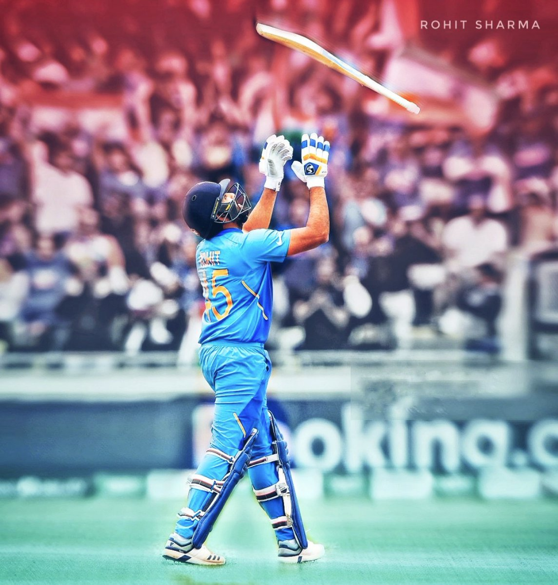

Early Life
Rohit Sharma was born on 30 April 1987 in Bansod, Nagpur, Maharashtra.His mother, Purnima Sharma, is from Visakhapatnam, Andhra Pradesh.His father, Gurunath Sharma, worked as a caretaker of a transport firm storehouse. Sharma was raised by his grandparents and uncles in Borivali because of his father's low income. He would visit his parents, who lived in a single-room house in Dombivli, only during weekends.He has a younger brother, Vishal Sharma.Rohit Sharma joined a cricket camp in 1999 with his uncle's money. Dinesh Lad, his coach at the camp, asked him to change his school to Swami Vivekanand International School, where Lad was the coach and the cricket facilities were better than those at Sharma’s old school. Sharma recollects, "I told him I couldn't afford it, but he got me a scholarship. So for four years I didn't pay a penny, and did well in my cricket".Sharma started as an off-spinner who could bat a bit before Lad noticed his batting ability and promoted him from number eight to open the innings. He excelled in the Harris and Giles Shield school cricket tournaments, scoring a century on debut as an opener.
Domestic Career
 Rohit Sharma made his List A debut for West Zone against Central Zone in the Deodhar Trophy at Gwalior in March 2005. Batting at number eight, he scored 31 not out as West Zone won by 3 wickets with 24 balls remaining. Cheteshwar Pujara and Ravindra Jadeja made their debuts in the same match.It was Sharma's unbeaten innings of 142 in 123 balls against North Zone at the Maharanna Bhupal College Ground in Udaipur in the same tournament that brought him into the limelight.He visited Abu Dhabi and Australia with the India A squad and was then included among India's 30-member probables list for the upcoming ICC Champions Trophy tournament, although he did not make the final squad.Sharma made his first-class debut for India A against New Zealand A at Darwin in July 2006. He scored 57 and 22 as India won by 3 wickets.He made his Ranji Trophy debut for Mumbai in the 2006–07 season and scored 205 off 267 balls against Gujarat.Mumbai went on to win the tournament with Sharma scoring a half-century (57) in his second innings in the final against Bengal.
Sharma has spent his entire domestic first-class career at Mumbai. In December 2009, he made his highest career score of 309 not out in the Ranji Trophy against Gujarat.In October 2013, upon the retirement of Ajit Agarkar, he was appointed team captain ahead of the 2013–14 season.
Acheivements
Sharma holds the world record for the highest individual score by a batsman playing in a one-day international match, having scored 264 against Sri Lanka at Eden Gardens, Kolkata, on 13 November 2014.He is the only player to have scored three double-centuries in this form of international cricket.In January 2020, Sharma was named as the ODI Player of the Year by the International Cricket Council (ICC).During the 2019 World Cup, Sharma became the only batsman to scored five centuries in a single edition of the Cricket World Cup.On 5 October 2019, during a Test match against South Africa, Sharma became the first batsman to score two centuries in a match on his first appearance as an opening batsman.In the same series, he broke Shimron Hetmyer's record for the highest number of sixes in a Test series.